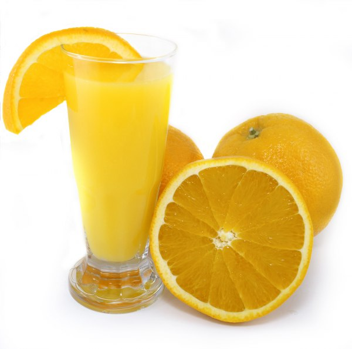
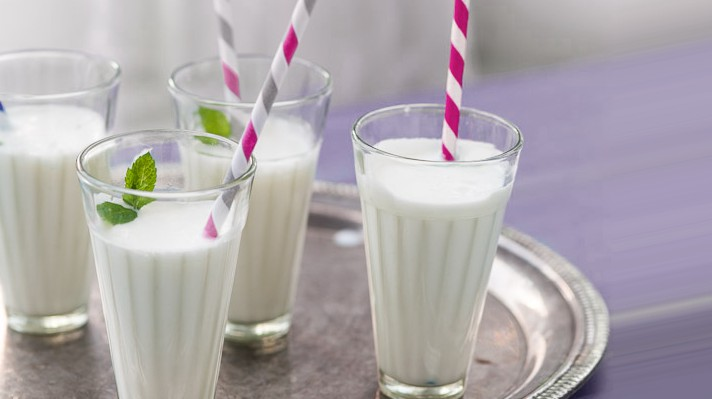

Напитки
Нутарел сок
 |
Необходими продукти: сезонни плодове Начин на приготвяне: Един истински сок от сезонни плодове, например, Ябълки. За да го приготвите ще ви трябва сокоизтисквачка. Нарежете плода на парченца и го сложете в машината. НЕ РАЗРЕЖДАЙТЕ С ВОДА! НЕ ДОБАВЯЙТЕ ЗАХАР! Дори от най киселите ябълки, сока става превъзходен! Но пийте бързо - все пак е истински и бързо ще се развали! |
Домашен фреш
|  | Необходими продукти: цитрусови плодове, захар, вода Начин на приготвяне: Истисквайте лимони, портокали и други цитрусови плодове, независимо дали на електронна или ръчна изтисквачка. След което разредете с вода и добавете захар на вкус. Насладете се на глътка освежаваща напитка! |
Айрян
|  | Необходими продукти: кисело мляко, вода, сол Начин на приготвяне: Киселото мляко е един от най-хубавите български продукти. Какво друго ни остава освен да приготвим един освежителен айрян за горещите дни! Разбийте млякото, след което го разредете с малко вода и добавете сол пожелание. Отолете жаждата си! |
Бързо и вкусно!